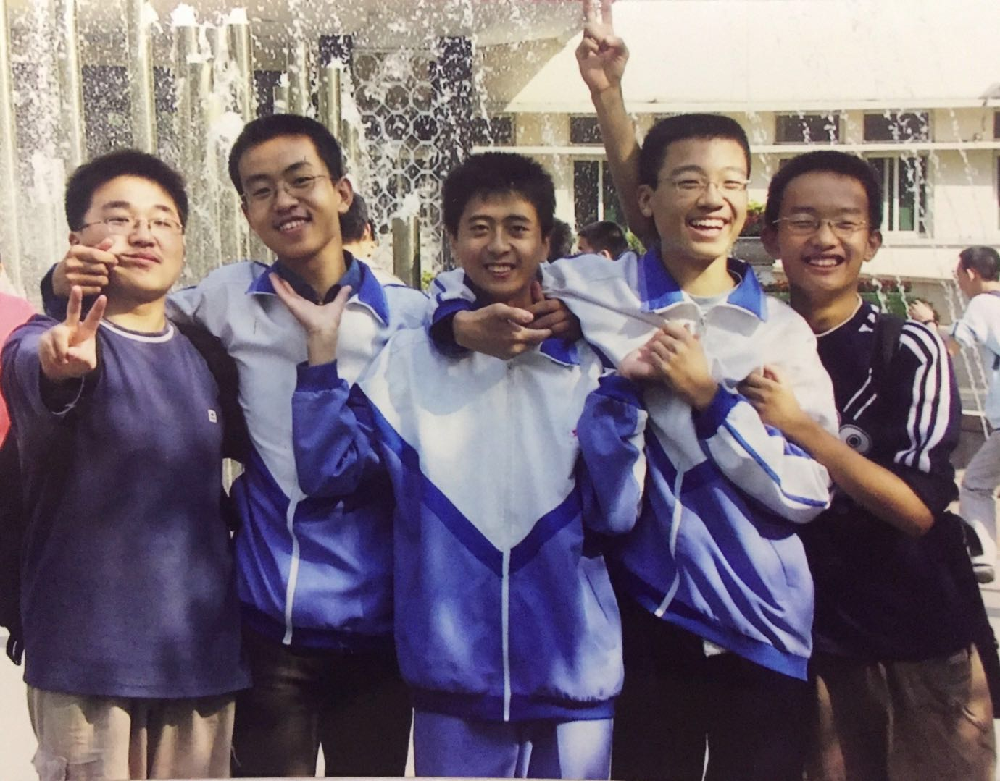
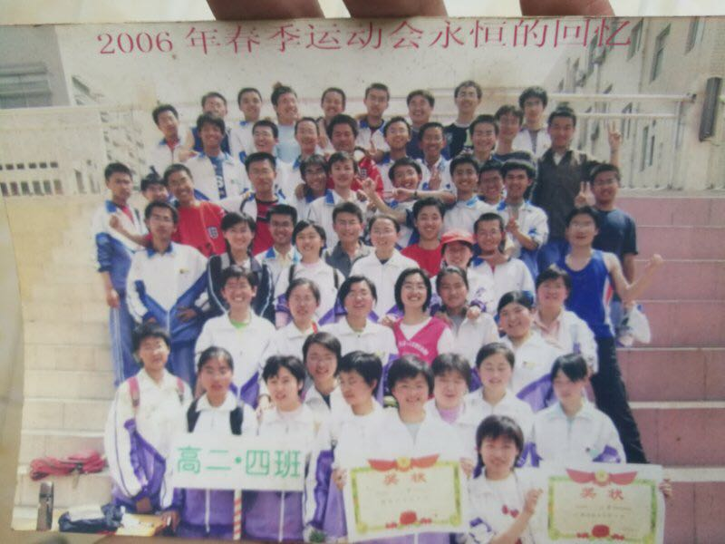

今天是2018年第一天，坐标杭州来福士言几又书店，天朗气清，惠风和畅，最近看了很多文章，也想了很多问题，总感觉要写点东西整理一下，算是对自己做个内存回收垃圾清理吧。元旦放假这几天朋友圈好多人发了18岁的照片，我也不能免俗，也找了看了一下，可惜当年智能手机还未出现，拍照还不方便，仅有的几张运动会，毕业照啥的也留在老家让妈多看看了，好在网上搜了下，结果当年的老班长电电同学把我们高中三年的很多趣事都记录了下来，甚是感动开心，文章地址（http://blog.renren.com/share/229866149/5636176653?from=timeline&isappinstalled=0 ）满满的青春回忆，忘不了高中的那个运动会，连跑了800,1500,还有个5000还是3000来着，最后理科实验班运动会可以拿到总分第二的成绩，一点不弱于有体育生的班级，还有高中时每周五下午操场挤满了人的球赛，周末一大清早起来踢球，踢球回来上自习晚了被老姜收拾，周末跟王猛去新华书店看书，还在县城很老的图书馆办了借书证，高考结束跟王民王伟老魏王鹏程王猛王鹏一起骑着环绕章丘市边界骑了好几天自行车，还有好多，感觉刚刚发生过一样，照片也来几张，   那时踢球感觉永远有使不完的劲可以一直跑下去，现在踢球看着自己的肚子都不忍直视，虽然还想一直跑，可是冲个一两次后就气喘吁吁跑不动了，所以今年的必选计划之一就是把肚子减下去，不求腹肌发达，只求穿上紧身球衣不被王泽俊那个死胖子取笑。计划目标都会列，可是执行力却很差，很多人也都是这样，我也是，我也一直在想是为什么，刚好这几天又看了惊云大牛的文章，有一篇就是专门讲这个的，有点启发，最关键的就是自律太差，再深入就是“自律从来都不是自己练出来的，而是你的欲望和不甘心压迫出来的。” （https://zhuanlan.zhihu.com/p/30929584 ），文章里的几句说的很对，摘抄在这里：
你懂了太多玩法，见过了太多世界，思维无论从广度还是深度都提升了很多，但你没主动性，没有自发的能动性，这些只会给你带来更大的困扰——空有感慨但是没有实际行动的欲望。
自律性和毅力差的人，吸取了越多的思维，越会让自己陷入好高骛远和焦虑迷茫的状态，你给一个有自律的人看到更大的世界，他会有更高的追求和更多的欲望，而你给一个没自律的人看到一个更大的世界，他会变得更痛苦，更迷茫，甚至心生邪念。
承认人性的阴暗面，你才能真正做到服从人性，利用人性。这世界上能主动做到自律，主动贯彻自己毅力的人，太少太少了，大部分人如果想进步，那么必须学会利用自己的脆弱的人性，自我利用自我，否则就算你的思维如何进步，你还是原地踏步。
有问题，就拿出来解决，人性是什么，就正视它，面对它，真的没什么不好，知骨架方可搭血肉，搭血肉方可塑身形，人生在世，需要太多此直面自我了。
喜欢恋爱就是人之常情，压抑带来的只有扭曲。追求自由就是人的天性，越是不自由就越会带来心理问题。市场化本来就是物竞天择，越是人工干预，越会造成更大的隐患。
你必须要承认，每个人从进步到成功到满足的路上，你要经历思维的进步，你也要经历主动性和自律能力的获得，思维的进步为你打开世界，主动性的培养为你提供可能，而培养自律能力则是实现这一切的基础。但大部分人，是没有主动培养自律的能力的，人性如此，人对于进步和自律的欲望永远是不足的。所以你人性中的不甘心，你对于这个世界更大的欲望，才是大部分人撬开这个所有链条的最终归宿。
很厚黑是吗？人性就是如此。你不甘心了，你才会去逼着自己每天都学一些东西，你有欲望了，它才会驱动你实现心中想做的事情。如果没有这一切，你很难很难做到所谓的自律。活在这个社会，你必须要承认这一点，大多数人练就强大自律能力，都是源于人性最朴实最初级的欲望和心态。
承认人性的弱点，真的很难，但一旦你承认了，你会发现你会看明白太多太多事情。认可你自己就不是完美的，认可好多事情就是要去利用人的弱点的，你才能知道，原来这才是制约普通人的问题。
大部分人，还没有到可以自控自己的自律和坚韧，大部分人，其实更需要这样一种平衡——你的欲望和心底让人见不到的东西，才是你进步的源泉。
人性就是这样。所谓的公司理念，所谓的正能量，都是之后的事情，但你心里最原始的欲望和动力，永远永远，都是最初的人性。
你一定要多去见识一些事情，你才会不甘心。也许你们从我这里可以让你们见到更大的世界，更深的玩法，更宏大的思维，提升你们的认知，
但我更希望，你们能从我这里得到不甘心，得到人性的一些欲望。这些才是能够真正帮助大多数人开启自律之门的东西。
惊云的这篇文章里重点说的就是不甘心，直面人性，承认人性的弱点其实跟老子说的无情（世事如万物，从来不以人的好恶而发生和演变，把一切看作问题才能解脱出来而真正面对，否则就是永远身陷其中的轮回之苦和自锢之途。），马斯克说的第一性原理（忠于真理（being precise about the truth）真实和准确，有一种东西叫做物理学，它是一种科学的方法，并且对于弄清真相来说非常有效。）都有想通之处，都是尊重事情的本来面目，客观规律，马斯克是我一直很崇拜佩服的人，他的成就不必多说，而他强调的第一性原理，物理学，科学我也很是认同，高中时期最感兴趣的课程就是物理课，因为只要从几个定理就可以推导解决出大部分问题，可以体会到思维推理的乐趣，而且当时自己还喜欢瞎推导，也才有了回忆录里面一个3节课的晚自习被我约了物理老师在空间站单独问了2节课的故事。
不知不觉扯了这么多了，新年计划还没写出来，挖掘自己内心的欲望，和自己交流，一点不甘心，一点好奇心，发现有好多书要读，好多思维需要提升，简单列在这里：
人文类：
失控----凯文凯利
复杂----梅拉尼-米歇尔
进化论----物种起源——达尔文
智能时代 On Intelligence----Jeff Hawkins
洞察力(Visual Intelligence: Sharpen Your Perception, Change Your Life)----外文原版 Amy E. Herman
原则----Dalio, Ray
围城----钱钟书
三体----刘慈欣
人类简史：从动物到上帝----尤瓦尔·赫拉利
劝学篇----福泽谕吉
黑客与画家----保罗•格雷姆
金融炼金术----索罗斯
理性乐观派----马特•里德利
乌合之众----勒庞
技术类：
集体智慧编程中文版----西格兰
PYTHON自然语言处理----Steven Bird
机器学习个人笔记完整版v4.21
超智能体
书单列完了，还是不少的，每读一本必须做笔记，结合自己经历增加感悟，不可走马观花的略读，相信认真读完这些自己进化成一个更好的自己。
身体和思维上的计划都列玩了，再就是工作，财富方面的了，工作的后面再慢慢细化，财富方面希望可以有除了工资之外的收入，投资理财也好，业余搞点副业也好，都可以考虑尝试，说到投资，前两年的的美股-英伟达，特斯拉和比特币都增值了很多，自己也错过了，主要还是当时眼界不够宽，行动不够果断，相信在后面还会有更多类似比特币英伟达这样的潜力股，需要的就是自己的判断力和执行力。还有就是婚姻感情方面，这个也是非常困扰自己的一个问题，也看了几部经典影片（东邪西毒，男人四十，围城），发现这个的确是很难说清楚的，就连马斯克自己也是离婚过多次，最近的一个还是反复结婚离婚复合又离婚，这个真是太难说，没法计划的，这篇文章也说明了马斯克跟我们一样也是凡人（Elon Musk最感性专访：我期待失败，也期待真爱https://mp.weixin.qq.com/s/4TgzL-3pr3ouXKCAet-B_g ）
最后18年的一个愿望就是希望可以去俄罗斯看场世界杯，期待亲眼看到北欧小国冰岛的维京战吼，还有以我热刺为主力的号称欧洲中国队的大英格兰，期待看到哈利凯恩的进球。